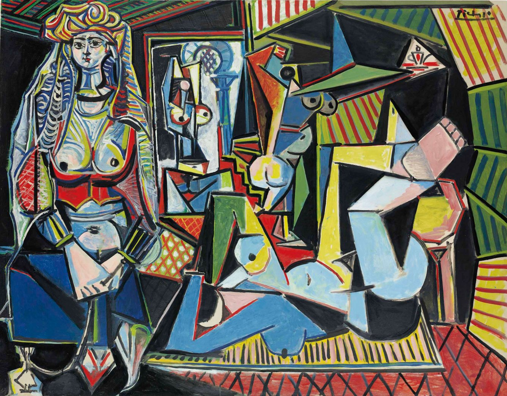

Pablo Picasso was born on October 25, 1881, in Malaga, Spain. He died on April 8, 1973, in Mougins, France, at the age of 91. In the nine decades between those two events, he produced an authenticated output estimated at more than 20,000 works across painting, sculpture, ceramics, printmaking, and drawing. He was the most prolific major artist in history, and by most measures the most commercially significant of the twentieth century. His auction record stands at $179.4 million, set at Christie's New York in May 2015 for Les Femmes d'Alger (Version O), a 1955 painting that had last sold for $31.9 million in 1997.[1]
That trajectory, from $31.9 million to $179.4 million in 18 years, captures something essential about this market. Picasso is not a speculative asset. He is the deepest, most institutionally supported artist market in the world, and the appreciation on significant works across multiple decades has been consistent in a way that few asset classes can match. The question for a collector is not whether Picasso is worth collecting. The question is which Picasso, and how to access it.
The life and the periods
Picasso arrived in Paris in 1900 as a 19-year-old from Barcelona, already a technically prodigious painter but not yet the artist he would become. The suicide of his close friend Carlos Casagemas in 1901 triggered the Blue Period, a phase of approximately three years in which he painted almost exclusively in blue and blue-green, depicting outcasts, the poor, and the isolated with a somber, elongated figuration drawn partly from El Greco. The Old Guitarist (1903-04), now at the Art Institute of Chicago, is the most famous Blue Period work. The Blue Period ended with Picasso's deepening friendship with the poet Guillaume Apollinaire and his first serious relationship, with Fernande Olivier, which ushered in the Rose Period (1904-1906): warmer tones, circus performers, acrobats, a lighter emotional register.
Les Demoiselles d'Avignon (1907), now at MoMA, is the work that demarcates everything before and after. It is not pretty and it was not immediately acclaimed — Matisse reportedly called it a provocation and Braque said it made him feel as if Picasso had been drinking petrol. But it announced Cubism, the most radical redefinition of pictorial space in Western art since the Renaissance. Analytic Cubism (1908-1912), developed jointly with Georges Braque, broke objects into faceted planes and reassembled them from multiple viewpoints simultaneously. Synthetic Cubism (1912-1919) introduced collage elements, broader color, and more decorative surfaces. These works are held almost entirely by institutions, and the competition when a significant example does appear is correspondingly acute.
The Neoclassical period (1918-1928) brought large, sculptural female figures and an engagement with Mediterranean classicism. The Surrealist period (1928-1937) is the phase that produced some of his most beloved and most commercially significant works: the Dora Maar portraits, the Marie-Therese Walter paintings, the hallucinatory assemblages of distorted bodies and faces that fused Cubism with the dream imagery of Surrealism. The 1935 Jeune fille endormie reproduced here belongs to this period, painted at the peak of his relationship with Marie-Therese.
The muses and why they drive value
Picasso's major series of the 1930s are inseparable from the women who inspired them. Marie-Therese Walter, whom Picasso met in 1927 when she was 17, became the dominant subject of his painting between approximately 1932 and 1937. The 1932 paintings of Marie-Therese are among the most desired in his entire output: voluptuous, brilliantly colored, painted with an urgency and a sensuality that is unmistakable. Nude, Green Leaves and Bust (1932), painted in a single day, sold for $106.5 million at Christie's New York in May 2010.[4] Femme Assise pres d'Une Fenetre (1932) sold for £73.6 million at Christie's in May 2021.[3] Femme a la montre (1932) sold for $139.3 million at Sotheby's in November 2023, making it the second most expensive Picasso ever sold at auction.[2] Three of the five most expensive Picassos ever sold at auction are from this single year.
Dora Maar, the Surrealist photographer who became Picasso's companion from 1936 to 1943, was the subject of portraits that match the Marie-Therese works in emotional intensity and exceed them in psychological complexity. Picasso called her his weeping woman. The portraits of Maar from the late 1930s and early 1940s are among the most sought works in his entire output, and they have the institutional support to sustain that demand across market cycles. Femme Assise (1938), featuring Maar, sold for $63.7 million at Christie's New York in 2015.[1]
Les Femmes d'Alger and why the $179.4 million record matters
Les Femmes d'Alger is a series of 15 paintings made between December 1954 and February 1955, Picasso's response to Delacroix's Women of Algiers in Their Apartment (1834), which hangs in the Louvre. It was one of Picasso's most sustained engagements with art history. The series was bought in its entirety by Victor and Sally Ganz in 1956 for $212,500, and progressively dispersed over the following decades. Version O, the final and largest canvas, last sold for $31.9 million in 1997, then reappeared at Christie's in 2015 as the centerpiece of their Looking Forward to the Past sale. It sold for $179.4 million, still the most expensive Picasso ever sold at auction.[1]
The significance of this sale extends beyond the price. It established the benchmark for Picasso's late Cubist output with a specific, institutional-grade work. It confirmed that the international buyer base for major Picassos operates at a level entirely disconnected from the broad market sentiment of any given year. And it set a reference point that has anchored the entire high end of the Picasso market ever since.

Provenance and documentation: the requirements that cannot be waived
The Zervos catalogue raisonne, compiled by Christian Zervos between 1932 and 1978, is the primary reference for Picasso authentication. Its 33 volumes document an extraordinary proportion of his output, though not exhaustively. Absence from Zervos for a significant oil of the relevant period is a concern that requires explanation before any commercial conversation begins. It is not automatically disqualifying, but the evidentiary standard for a work outside Zervos is considerably higher.
The Picasso Administration, managed by his heirs, does not issue general certificates of authenticity. Authentication in the current market relies on the cumulative weight of catalogue documentation, gallery provenance from the primary dealers, exhibition history at recognized institutions, and scholarly opinion. Cambridge Collective's approach to any Picasso acquisition mandate is a complete provenance audit before any offer is made. We have access to the specialist resources required to conduct this rigorously, and we do not cut corners on documentation regardless of how compelling a work appears on visual grounds alone.
The market in 2024 and what it means for buyers today
The broader market softness of 2024 affected the Picasso market in a revealing way. Works in the Rose and Blue periods with clean institutional provenance held their value with relative stability. Works in the 1932 Marie-Therese group demonstrated exceptional resilience: three consecutive auction appearances of works from this year or period in 2021, 2022, and 2023 produced results at or above $100 million.[2],[3] The softness was concentrated in prints and editions where supply is substantial, in works without clear period significance, and in works with ambiguous or incomplete documentation.
This stratification is the most important structural feature of the Picasso market for a serious collector to understand. The works that matter most are largely insulated from broad market sentiment because their scarcity is irreversible. There are finite Blue Period oils, finite 1932 Marie-Therese portraits, finite major Cubist canvases. Each one that enters a permanent institutional collection reduces the number available to private collectors. That process is ongoing and accelerating.
For a collector with a serious acquisition mandate in this category, the right framework is long-term. You are not trying to time the market. You are trying to acquire works of fundamental quality and scarcity at the best available terms, through the best available channel. For works above $15 million, the private market is where the majority of significant transactions take place, and the private market is responsive to relationships, not to auction catalogues. Cambridge Collective is active in this market. We are open to a conversation about what is currently available.
Sources
- Christie's. Looking Forward to the Past Evening Sale, 11 May 2015. New York: Christie's, 2015. Les Femmes d'Alger (Version O), 1955. Final price including premium: $179,365,000.
- Sotheby's. The Collection of Emily Fisher Landau, 8 November 2023. New York: Sotheby's, 2023. Femme a la montre, 1932. Final price: $139,363,500.
- MyArtBroker. Pablo Picasso Record Prices. London: MyArtBroker, 2026. myartbroker.com/artist-pablo-picasso/record-prices.
- Christie's. Impressionist and Modern Art Evening Sale, 4 May 2010. New York: Christie's, 2010. Nude, Green Leaves and Bust, 1932. Final price: $106,482,500.
- Art Basel and UBS. The Art Market 2025: Global Art Market Report. Basel: Art Basel, 2025.